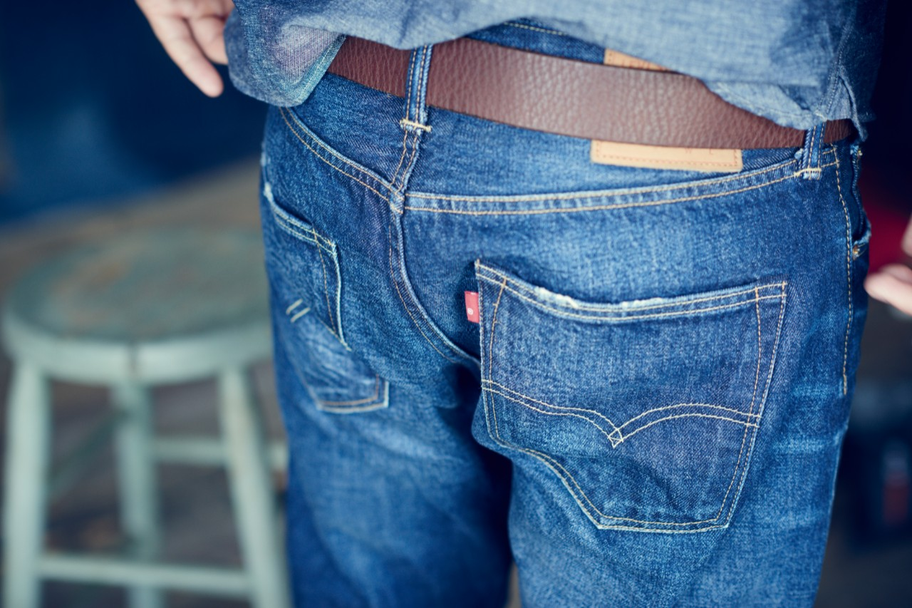

홈 > 브랜드 매거진 > 리바이스
리바이스
리바이스는 청바지를 작업복에서 세대와 태도를 드러내는 문화적 유니폼으로 바꾼 브랜드다. 튼튼한 바지는 시간이 지나며 자유, 젊음, 반항, 일상성을 담는 상징으로 확장되었다.
산업 분야 패션·럭셔리 · 공개 등급 편집 검수 · 브랜드 평가 4.7 ★

한눈에 보는 브랜드
리바이스는 청바지를 작업복에서 세대와 태도를 드러내는 문화적 유니폼으로 바꾼 브랜드다. 튼튼한 바지는 시간이 지나며 자유, 젊음, 반항, 일상성을 담는 상징으로 확장되었다.
브랜드 관점
리바이스는 청바지를 작업복에서 세대와 태도를 드러내는 문화적 유니폼으로 바꾼 브랜드다. 튼튼한 바지는 시간이 지나며 자유, 젊음, 반항, 일상성을 담는 상징으로 확장되었다.
시작과 성장
리바이스는 최초의 청바지 브랜드로 끊임없이 원단, 리벳 장식, 박음질 등의 기술을 개발해왔다, 뛰어난 품질을 제공할 뿐만 아니라 청바지가 갖는 사회적 의미를 혁신하고 있다.
브랜드 아이덴티티
리바이스는 최초의 청바지 브랜드로서, 청바지 그 자체의 의미를 만들어 갔다. 리바이스는 청바지의 의미를 실용주의, 개척정신이 담긴 옷에서부터 자유와 저항의 상징으로 혁신시켰다.
제품과 서비스
대표 제품과 서비스 정보는 편집 검수 후 공개됩니다.
현재 상태
타임라인
정리된 연도형 이벤트가 없습니다.
BI/CI 변천사
함께 읽을 브랜드
 패션·럭셔리 · 편집 검수샤넬
패션·럭셔리 · 편집 검수샤넬샤넬은 패션을 장식이 아니라 태도와 해방의 언어로 바꾼 브랜드다. 브랜드의 힘은 제품의 고급스러움뿐 아니라 여성의 몸과 생활 방식을 새롭게 해석한 상징성에서 나온다.
루이비통은 여행가방에서 출발했지만, 이동의 기능을 럭셔리한 삶의 상징으로 확장했다. 브랜드의 헤리티지는 물건을 담는 도구가 아니라 이동하는 사람의 취향과 지위를 표현...
 패션·럭셔리 · 매거진 완성몽블랑
패션·럭셔리 · 매거진 완성몽블랑몽블랑은 필기구를 기록의 도구에서 성취와 품격의 상징으로 끌어올린 브랜드다. 만년필은 기능 제품이지만, 브랜드가 축적한 이미지는 서명, 의사결정, 지적 권위 같은 장...
빅토리아 시크릿은 속옷을 기능적 제품이 아니라 무대화된 판타지와 자기표현의 이미지로 포장한 브랜드다. 브랜드는 제품보다 쇼, 모델, 시각적 연출을 통해 소비자가 상상...
 패션·럭셔리 · 자료 기반리바이 스트라우스 앤드 컴퍼니
패션·럭셔리 · 자료 기반리바이 스트라우스 앤드 컴퍼니리바이 스트라우스 앤드 컴퍼니는 미국의 패션·럭셔리 브랜드로, 소재, 실루엣, 로고, 컬렉션 운영이 취향과 지위 신호를 만드는 영역입니다.
프라다는 아름다움을 익숙한 화려함보다 지적인 긴장감으로 표현하는 브랜드다. 소재와 형태, 절제된 색감은 패션을 단순한 장식이 아니라 관찰과 해석의 대상으로 만든다.
구찌는 이탈리아의 패션·럭셔리 브랜드로, 소재, 실루엣, 로고, 컬렉션 운영이 취향과 지위 신호를 만드는 영역입니다.
 패션·럭셔리 · 편집 검수까르띠에
패션·럭셔리 · 편집 검수까르띠에까르띠에는 패션·럭셔리 브랜드로, 소재, 실루엣, 로고, 컬렉션 운영이 취향과 지위 신호를 만드는 영역입니다.